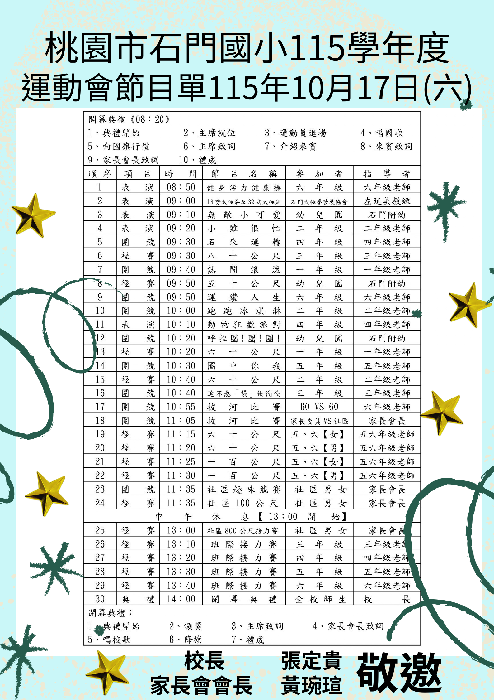
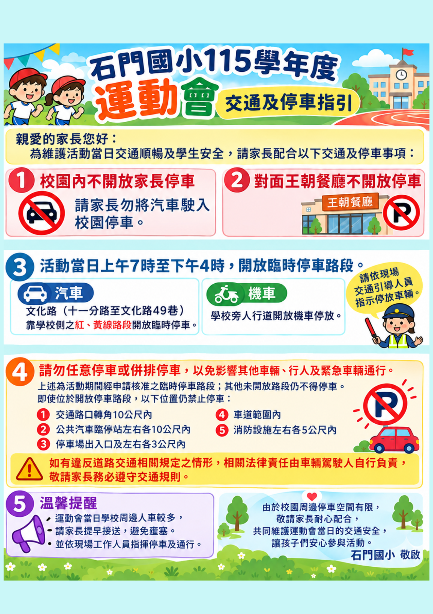

01 FIELD SHOW
活力表演
六年級健康操、太極拳與太極劍，還有幼兒園和各年級準備的精彩演出。
桃園市龍潭區石門國民小學
115 學年度・全校運動會
從活力表演、趣味團競到班際接力，邀請全校師生與家長一起走進操場， 為每一次嘗試、每一聲加油留下回憶。
SHIMEN ELEMENTARY · SPORTS DAY
把這一天
留給運動與喝采。
ONE DAY, MANY MOMENTS
為自己全力以赴，也為身邊的夥伴加油。
今年的運動會，大家都是主角。
六年級健康操、太極拳與太極劍，還有幼兒園和各年級準備的精彩演出。
石來運轉、運鑽人生、拔河比賽，合作默契就是最棒的得分關鍵。
從 50、60、80 公尺到班際接力，為每一棒、每一步熱情應援。
家長委員、社區夥伴也將加入賽事，讓運動會成為大家的共同回憶。
THE DAY AT A GLANCE
依時間找到想看的項目，
和孩子約好，在場邊見。
典禮開始・主席就位・運動員進場・唱國歌・向國旗行禮・主席致詞・介紹來賓・來賓致詞・家長會長致詞・禮成
共 30 個賽程項目
賽程依 115 學年度運動會節目單整理；同時段可能有不同項目進行，請留意現場公告與廣播。若有調整，以學校最新公告為準。
閉幕典禮流程：頒獎、主席致詞、家長會長致詞、唱校歌、降旗、禮成。
TRAFFIC & PARKING
運動會當日 07:00–16:00，指定路段開放臨時停車。請依照指引停放，並配合現場交通引導人員。
校園內不開放家長汽車停車
對面王朝餐廳不開放停車
請勿任意停車或併排停車，以免影響其他車輛、行人與緊急車輛通行。未開放路段仍不得停車。
SAVE & SHARE
點選圖片可快速檢視；下載連結保留高畫質原始 PNG。


2026 年 10 月 17 日（星期六），桃園市龍潭區石門國民小學。
校園內不開放家長汽車停車，請先查看上方指定臨停路段與停車提醒。
建議穿著好走的鞋，並視天氣準備飲水、遮陽用品或雨具。
2026.10.17・星期六・石門國小